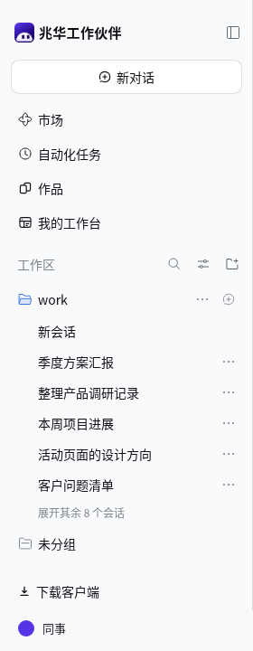

四个入口。
下面就是最近对话。
—
同一视口，不滚动侧栏时的完整可见行数。
原型演示结果，不代表正式版本已经实现。
从上往下，一眼找到标志、搜索、收起放在一行。新对话回到普通行，入口只留四个。
藏起层级，保留能力一个工作区直接列对话；多个时仍按工作区分组。显示选项收在最近对话旁。
工作台去哪了？作品页内可切换“创作成果 / 工作概览”。待办、日程和项目跟进继续保留，等评审确认。
底部留给个人下载客户端收到个人菜单，桌面版隐藏。设置仍从个人菜单进入。
侧栏方案 A · 结构评审 · 相同高度 720px

同一视口，不滚动侧栏时的完整可见行数。
原型演示结果，不代表正式版本已经实现。